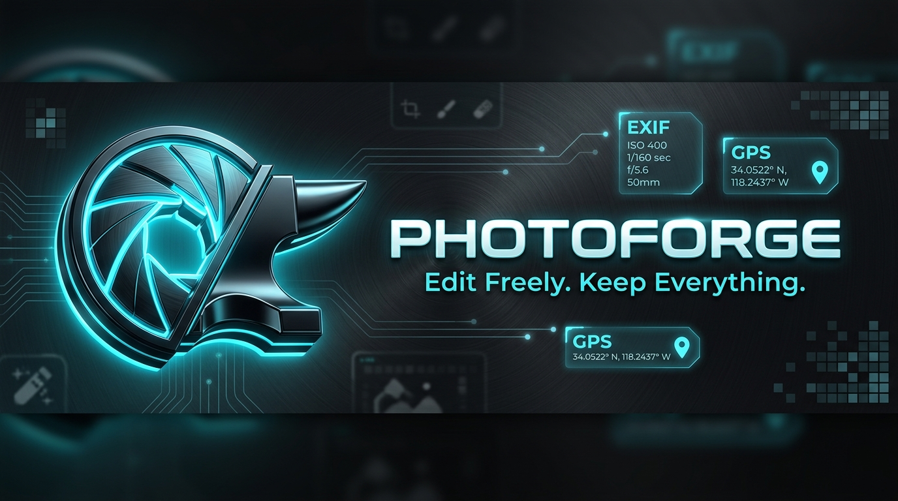

Restore lost camera EXIF, lens specs, and GPS data in edited photos by matching back to originals. Convert to HEIC & WebP with 50% savings while preserving full provenance.

Camera originals are opened strictly read-only and fingerprinted with SHA-256 before and after operations. Your raw shots are never modified in place.
Matches edited images back to source captures using filename edit distance, timestamps, aspect ratios, perceptual visual hashing (dHash), and EXIF remnants.
Configurable privacy levels: KeepExact, Round coordinates to a 1km fuzzy radius buffer for privacy, or Remove GPS metadata entirely.
Batch convert photos with up to 50% storage reduction while maintaining 100% metadata continuity and color profiles.
Zero cloud dependencies, zero analytics, and zero tracking. Android app requires zero network permissions.
Modern Fluent dark WPF desktop suite with context menu integration, full-featured CLI tool, and Scoped Storage Android app.